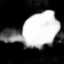

import torch
import torchvision
from torchvision import transforms
import numpy as np
import matplotlib.pyplot as plt
%matplotlib inline
import gdownSemantic Segmentation

Unet architecture

gdown.download(url="https://drive.google.com/file/d/1kiR9pPP3gIqoyT9bWUnA0rgZuRTiUv7q/view?usp=share_link", output="./unet_dict.pt", quiet=False, fuzzy=True)class Encoder_Block(torch.nn.Module):
def __init__(self,inp_channels,out_channels):
super().__init__()
self.model = torch.nn.Sequential(
#implement encoder block
)
self.pooling = # implement pooling
def forward(self,x):
#compute intermediate output (before pooling)
return # return intermediate and after pooling outputs
class Decoder_Block(torch.nn.Module):
def __init__(self,inp_channels,out_channels):
super().__init__()
self.upsample = # implement upsampling using transposed convolution
self.model = torch.nn.Sequential(
#implement decoder block
)
def forward(self,x,enc_x):
x = #make upsampling
x = #concatenate upscaled input with encoder block output (enc_x)
return self.model(x)Let’s check our implementation
enc = Encoder_Block(64,128)
dec = Decoder_Block(256,128)
inp = torch.randn(1,64,64,64)
x,enc_x = enc(inp)
assert x.shape == (1,128,32,32), "correct encoder implementation"
inp = torch.randn(1,256,32,32)
x = dec(inp,enc_x)
assert x.shape == (1,128,64,64), "correct decoder implementation"class Unet(torch.nn.Module):
def __init__(self,inc,outc,hidden_size=64):
super().__init__()
self.Encoder = torch.nn.ModuleList([
#implement full encoder by adding encoder blocks
])
self.bottleneck = torch.nn.Sequential(
#implement bottleneck - sequatial application of convolutional layers with kernel size 1
)
self.Decoder = torch.nn.ModuleList([
#implement full decoder by adding decoder blocks
])
self.last_layer = torch.nn.Conv2d(hidden_size,outc,kernel_size=3,padding="same")
def forward(self,x):
enc_xs = []
for module in self.Encoder:
# apply encoder modules sequentially, do not forget to store intermediate output
enc_xs = enc_xs[::-1]
x = self.bottleneck(x)
for i,module in enumerate(self.Decoder):
# apply decoder modules sequentially using intermediate encoder outputs
return self.last_layer(x)Check that your implementation works correctly
unet = Unet(3,11)
assert unet(torch.randn(1,3,128,128)).shape == (1,11,128,128), "check your implementation"Let’s start working with data
transform = transforms.Compose([
transforms.Resize(128),
transforms.CenterCrop(128),
transforms.ToTensor(),
transforms.Normalize(mean=0.5,std=0.5)
])
def class_split(data,n=3):
data = np.array(data)
res = []
for i in range(1,1+n):
mask = np.zeros_like(data)
mask[data==i] = 1.
res.append(mask[None])
return torch.from_numpy(np.concatenate(res,axis=0)).to(torch.float)
target_transform = transforms.Compose([
transforms.Resize(128),
transforms.CenterCrop(128),
class_split
])
dataset = torchvision.datasets.OxfordIIITPet("./data",split="trainval",target_types="segmentation",download=True,transform=transform,target_transform=target_transform)Downloading https://thor.robots.ox.ac.uk/datasets/pets/images.tar.gz to data/oxford-iiit-pet/images.tar.gz100%|██████████| 791918971/791918971 [00:37<00:00, 21168795.70it/s]Extracting data/oxford-iiit-pet/images.tar.gz to data/oxford-iiit-pet
Downloading https://thor.robots.ox.ac.uk/datasets/pets/annotations.tar.gz to data/oxford-iiit-pet/annotations.tar.gz100%|██████████| 19173078/19173078 [00:01<00:00, 10020703.36it/s]Extracting data/oxford-iiit-pet/annotations.tar.gz to data/oxford-iiit-petdevice = torch.device("cuda" if torch.cuda.is_available() else "cpu")
unet = Unet(3,3).to(device)
dataloader = torch.utils.data.DataLoader(dataset,batch_size=32,shuffle=True)
optimizer = torch.optim.Adam(unet.parameters(),lr=0.001)def train(model,dataloader,optimizer,loss_func=torch.nn.CrossEntropyLoss(),epochs=5):
for i in range(epochs):
for x,y in dataloader:
#implement standard training stufftrain(unet,dataloader,optimizer)iou = []
for x,y in tqdm(dataloader):
#implement evaluation of iou by directly computing intersection and union between class masks generated by model and ground truthround(np.mean(iou)*100,1)!wget -nv "https://fikiwiki.com/uploads/posts/2022-02/1644990866_45-fikiwiki-com-p-prikolnie-kartinki-pro-zhivotnikh-47.png"2023-04-03 23:15:50 URL:https://fikiwiki.com/uploads/posts/2022-02/1644990866_45-fikiwiki-com-p-prikolnie-kartinki-pro-zhivotnikh-47.png [1205459/1205459] -> "1644990866_45-fikiwiki-com-p-prikolnie-kartinki-pro-zhivotnikh-47.png" [1]from PIL import Image
img = Image.open("/content/1644990866_45-fikiwiki-com-p-prikolnie-kartinki-pro-zhivotnikh-47.png")img = transform(img)[:3][None].to(device)
mask = unet(img)[0]transforms.ToPILImage()(torch.nn.Softmax(dim=0)(mask)[0:1].detach().cpu())
transforms.ToPILImage()(img[0].detach().cpu()/2+0.5)